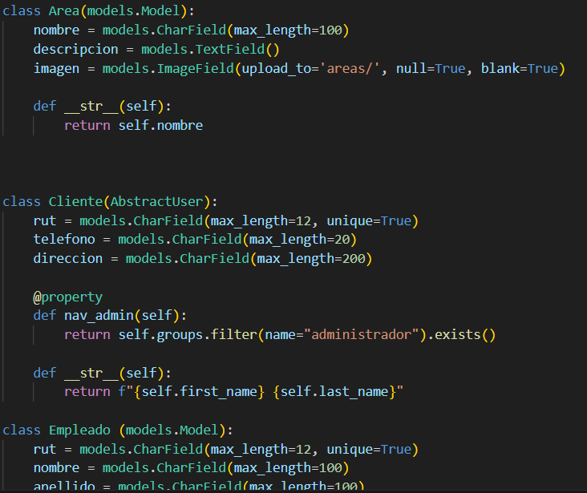
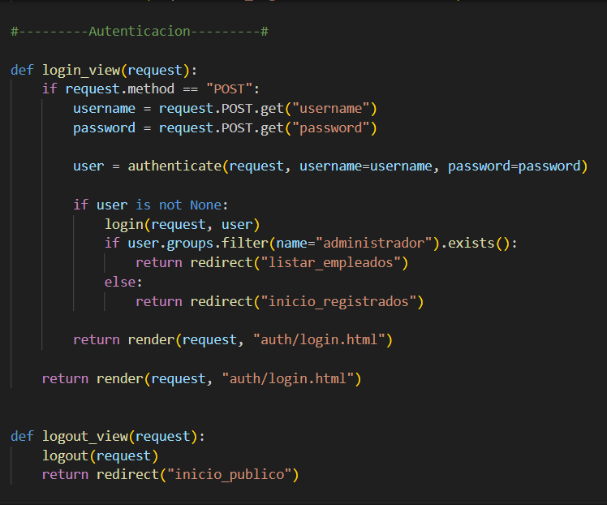

Mejor Salud Lab
-
Descripción:
La finalidad del desafío era crear un proyecto basado en django (temática libre). La temática que se eligió fue un laboratorio clínico ficticio, que venda sus servicios al público de los exámenes médicos que ofrece. Y dependiendo del tipo de usuario que ingrese a la página web, puede ser cliente o administrador.
-
Desafío:
El desafío principal es que la página web contenga manejo de modelos y orm con django, gestión de usuarios y administradores con app admin de django, creación de CRUD y autenticación de usuarios.
-
Solución propuesta:
-
Tecnologías utilizadas:
-
Aprendizajes:
Implementación de Django desde cero, creando proyectos y aplicaciones relacionadas al
proyecto principal.
Diseñar un modelo entidad-relación que satisfaga las necesidades del negocio.
Traducir el modelo en models.py de la aplicación (uso de restricciones, tipos de datos,
incorporación de formularios bootstrap)
Diseñar formularios en forms.py a partir del modelo.
Gestión de usuarios con la página de administración de django
Creación de CRUD con vistas y url
Uso de sessions para usar datos de usuario y carrito de compras
Modelos

Vistas

-
Métricas de impacto logradas:
Tiempo estimado de desarrollo: Dos días
Mejoras encontradas: Mejorar UX, aplicar en CRUD la implementación de
imagenes para examenes y funcionarios
Cobertura: Cualquier laboratorio clínico que quiera implementar un sistema
de solicitud de exámenes en línea
-
Habilidades Técnicas:
- Backend / Django:
Desarrollo de aplicaciones web usando Django (4+)
Creación y gestión de modelos y ORM (relaciones, validaciones, restricciones)
Implementación de CRUD (Create, Read, Update, Delete)
Manejo de vistas y URLs
Gestión de usuarios y permisos (clientes y administradores)
Autenticación y autorización de usuarios
Uso de sessions para mantener información del usuario (carrito, login)
- Frontend / Interfaz de usuario:
Estructuración de la página web con HTML5 y CSS3
Diseño responsivo con Bootstrap 5
Creación de formularios dinámicos usando Django Forms
Integración de carruseles y componentes interactivos (Bootstrap JS)
- Bases de datos:
Diseño de modelo entidad-relación para el negocio
Uso de SQLite para almacenamiento de datos
- Herramientas de gestión de proyecto:
Git y Github para control de versiones
Python 3 para desarrollo backend
-
¿Porqué Se eligió este proyecto?:
Se eligió este proyecto ya que permitió aplicar la gran mayoría de los conocimientos
adquiridos a lo largo del bootcamp de Python,
integrando desarrollo web con Django en un contexto práctico.
Además, se optó por una temática relacionada con el área sanitaria, ya que es un entorno con
el que tengo experiencia previa,
lo que facilitó la definición de requerimientos reales, como la gestión de usuarios,
exámenes y procesos administrativos.
Este proyecto también representó un desafío importante al integrar múltiples
funcionalidades, como autenticación de usuarios,
manejo de base de datos mediante ORM y desarrollo de operaciones CRUD, simulando el
funcionamiento de un sistema real.
Finalmente, este trabajo marca el inicio de mi camino en el desarrollo de software,
consolidando las bases necesarias para futuros proyectos
más complejos y orientados a resolver problemáticas del mundo real.